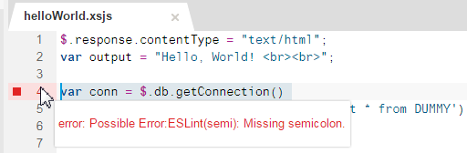
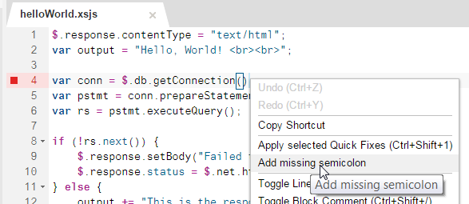

JavaScript Editor
You can write server-side JavaScript using the JavaScript editor, which provides syntax validation and code highlighting.
The JavaScript editor in the SAP HANA Web-based Development Workbench includes the ESLint open-source library, which helps to validate Javascript code. All JavaScript files (.js, .xsjs, and .xsjslib) are checked. The editor highlights any code that does not conform to ESLint standards and flags each issue detected according to its severity as follows: error (red); warning (yellow); information (blue).
- Category: Classifies the issue, for example, possible error, best practice, stylistic issue, and others.
- Rule ID: Defines the issue. For example, the rule ID semi enforces the use of semicolons.
- Message: Details the issue.

The ESLint code check is enabled by default. In the Editor settings, you can configure the severity level of the code check, disable the code check entirely, or just so that it is not triggered every time you make a change to the code.

You can apply the fixes available for the issues detected in your code by choosing Apply Selected Quick Fixes in the context menu of the file. Alternatively, open the context menu on a line with a highlighted issue to display and apply a specific quick fix, as shown in the example below:

- Removes superfluous lines and adds line breaks where necessary
- Removes or adds spaces, for example, before conditional if statements
- Corrects code indentation
- Corrects the positioning of curly braces (opening curly braces are placed on the same line as the corresponding statement)
You can beautify any open JavaScript file by choosing Beautify from the context menu.